O problema
Desafio administrativo e logístico, especialmente diante da necessidade de absorver prospectivamente vestígios pós-processamento, contraprovas e materiais destinados a eventuais contra perícias.
Os vestígios vem para Diretoria de Laboratório Forense através das autoridades policiais, com requisições periciais de exames específicos realizados pela pasta. Lá dentro, após o processamento, eles retornam para as autoridades que fazem a custódia desse material (no caso do laboratório: armas brancas, roupas, balanças, tabletes de droga) nas delegacias respectivas. Nas cidades do interior, tudo o que é processado em definitivo pelas unidades, vem para capital como contraperícia. Por exemplo: em 2025, 12 mil alíquotas de contraprova, proveniente da perícia de entorpecentes, foram encaminhadas ao Laboratório Forense onde ficam hoje armazenadas em uma sala de custódia de contraprovas. Nesta mesma sala é armazenado também as contraprovas produzidas pela região metropolitana em Cuiabá. Ainda existe também todo quantitativo de contraprovas gerado por materiais biológicos da Toxicologia e da Biologia Molecular e que são custodiados em contêiner refrigerado. Esses materiais todos estão hoje sob responsabilidade do Núcleo de Custódia.
O principal impacto a fragmentação da responsabilidade pela custódia dos vestígios após o processamento pericial, com consequências para a rastreabilidade, a logística, a segurança e a gestão do acervo.
AS-IS · o processo antes do MVP
O caminho real, com quem faz, o que entra, onde espera e o que é automatizável. Fonte: tabela AS-IS do projeto.

Fluxograma AS-IS · amarelo: etapa manual; tracejado: ponto de espera. Os números correspondem à tabela. Fonte Mermaid.
| Etapa | Quem faz | Entra | Ação | Sai | Sistema | Regra | Onde espera | Tempo | Automatizável |
|---|---|---|---|---|---|---|---|---|---|
| Coleta do vestígio | Perito / agente competente | Vestígio no local de crime | Coleta, identifica e acondiciona | Vestígio lacrado | RNC / registros | Preservação e integridade | Local de coleta / transporte | 0,50 | Pouco |
| Requisição pericial | Autoridade requisitante | Vestígio e dados do procedimento | Solicita exame específico | Requisição e material encaminhado | Requisição / Atena | Competência e tipo de exame | Unidade requisitante / transporte | 0,25 | Sim, com apoio humano |
| Recebimento | Servidor do Laboratório | Vestígio e requisição | Confere material, lacre e documentos | Material recebido ou pendência registrada | Atena / RNC | Conformidade da entrega | Área de recebimento | 0,25 | Sim, com apoio humano |
| Registro e distribuição | Equipe administrativa / técnica | Material recebido | Registra e encaminha ao setor competente | Material distribuído | Atena | Especialidade pericial | Fila do setor técnico | 0,17 | Sim, com regra clara |
| Processamento pericial | Perito criminal | Vestígio e requisição | Realiza exames e análises | Resultado técnico e material remanescente | Registros técnicos / Atena | Método e protocolo pericial | Fila de exames | 0,50 | Pouco |
| Emissão do laudo | Perito criminal | Resultados dos exames | Elabora, revisa e assina laudo | Laudo pericial | Atena / laudo | Validação técnica do perito | Fila de elaboração / revisão | 0,50 | Sim, com apoio humano |
| Separação pós-exame | Equipe técnica | Material processado | Separa vestígios remanescentes e contraprovas | Materiais para destinos distintos | RNC / registros | Natureza e destinação | Setor técnico | 0,17 | Pouco |
| Preparação da devolução | Equipe do Laboratório | Vestígios remanescentes | Confere, acondiciona e registra saída | Material para devolução | Atena / RNC | Identificação e integridade | Área de expedição | 0,25 | Sim, com apoio humano |
| Devolução à autoridade | Servidor / transportador autorizado | Vestígio e documentação | Entrega e registra transferência | Vestígio sob guarda policial | RNC / comprovante | Identificação do recebedor | Aguarda retirada / transporte | 0,25 | Pouco |
| Preparação da contraprova | Perito / equipe técnica | Alíquota ou material biológico | Identifica e acondiciona | Contraprova preparada | Registros / etiquetas | Requisitos de conservação | Setor técnico | 0,17 | Pouco |
| Recebimento na custódia | Núcleo de Custódia | Contraprova e registros | Confere, registra e recebe | Contraprova custodiada | Atena / controles internos | Integridade e identificação | Fila de recebimento | 0,25 | Sim, com apoio humano |
| Armazenamento | Núcleo de Custódia | Contraprova recebida | Organiza e armazena conforme categoria | Material localizado na custódia | Controle de localização | Conservação e segurança | Sala / contêiner refrigerado | 0,17 | Sim, com apoio humano |
TO-BE · o processo com o MVP
O que muda em cada etapa, quem passa a fazer e o ganho esperado. Fonte: tabela TO-BE do projeto.

Fluxograma TO-BE · verde: máquina (automação local); azul: pessoa (fé pública). Fonte Mermaid.
Com a implantação da Central de Custódia Definitiva, a POLITEC/MT deixa de manter a guarda pós-pericial descentralizada entre delegacias e unidades técnicas e passa a centralizar o recebimento, armazenamento e gerenciamento dos vestígios processados e contraprovas, com rastreabilidade, segurança e apoio de inteligência artificial na gestão logística, bem como no controle e na previsão de elegibilidade para descarte, conforme a natureza de cada vestígio e os requisitos legais aplicáveis, mediante autorização competente.
- Coleta e requisição pericial
Mantidos os procedimentos legais e técnicos de origem.
A pessoa, sem mudançaPreservação da cadeia de custódia. - Recebimento e processamento pericial
Mantidos os exames, conferências técnicas e emissão dos laudos.
A pessoa, sem mudançaContinuidade e segurança dos procedimentos periciais. - Preparação pós-processamento
Vestígios remanescentes e contraprovas passam a ser destinados à Central, conforme regras aplicáveis.
A pessoa assistida pela máquinaPadronização do encaminhamento e redução de inconsistências. - Cadastro e classificação dos materiais
Sistema identifica categorias e sugere condições de armazenamento.
A pessoa assistida pela máquinaMelhor organização e menor retrabalho. - Encaminhamento à Central
Substituição do fluxo rotineiro de devolução às delegacias pelo encaminhamento à Central.
A pessoa assistida pela máquinaConcentração da custódia institucional e rastreabilidade. - Recebimento na Central
Conferência física e validação dos registros de transferência de custódia.
A pessoa assistida pela máquinaMaior controle de entrada e identificação dos responsáveis. - Endereçamento inteligente
Sistema sugere contêiner e posição conforme categoria, compatibilidade e capacidade.
A máquina (automação)Otimização da ocupação e localização dos materiais. - Armazenamento físico
Materiais são acondicionados e movimentados em estruturas apropriadas.
A pessoa assistida pela máquinaSegurança, conservação e organização logística. - Monitoramento de ocupação
Sistema acompanha entradas, saídas, capacidade e tendências de crescimento.
A máquina (automação)Previsão de saturação e planejamento de expansão. - Localização e consulta
Pesquisa digital por identificação, categoria, lacre e endereço.
A máquina (automação)Redução do tempo de busca e recuperação de informações. - Controle de elegibilidade para descarte
Sistema sinaliza materiais potencialmente aptos à destinação conforme critérios legais cadastrados.
A pessoa assistida pela máquinaApoio à gestão do acervo e planejamento da capacidade. - Autorização e execução do descarte
Decisão competente e execução supervisionada, com registros de custódia.
A pessoa assistida pela máquinaDestinação legalmente adequada e auditável.
| Etapa | O que muda | Quem faz | Benefício | Esforço |
|---|---|---|---|---|
| Coleta e requisição pericial | Mantidos os procedimentos legais e técnicos de origem. | A pessoa, sem mudança | Preservação da cadeia de custódia. | Baixo |
| Recebimento e processamento pericial | Mantidos os exames, conferências técnicas e emissão dos laudos. | A pessoa, sem mudança | Continuidade e segurança dos procedimentos periciais. | Baixo |
| Preparação pós-processamento | Vestígios remanescentes e contraprovas passam a ser destinados à Central, conforme regras aplicáveis. | A pessoa assistida pela máquina | Padronização do encaminhamento e redução de inconsistências. | Médio |
| Cadastro e classificação dos materiais | Sistema identifica categorias e sugere condições de armazenamento. | A pessoa assistida pela máquina | Melhor organização e menor retrabalho. | Médio |
| Encaminhamento à Central | Substituição do fluxo rotineiro de devolução às delegacias pelo encaminhamento à Central. | A pessoa assistida pela máquina | Concentração da custódia institucional e rastreabilidade. | Alto |
| Recebimento na Central | Conferência física e validação dos registros de transferência de custódia. | A pessoa assistida pela máquina | Maior controle de entrada e identificação dos responsáveis. | Médio |
| Endereçamento inteligente | Sistema sugere contêiner e posição conforme categoria, compatibilidade e capacidade. | A máquina (automação) | Otimização da ocupação e localização dos materiais. | Alto |
| Armazenamento físico | Materiais são acondicionados e movimentados em estruturas apropriadas. | A pessoa assistida pela máquina | Segurança, conservação e organização logística. | Alto |
| Monitoramento de ocupação | Sistema acompanha entradas, saídas, capacidade e tendências de crescimento. | A máquina (automação) | Previsão de saturação e planejamento de expansão. | Alto |
| Localização e consulta | Pesquisa digital por identificação, categoria, lacre e endereço. | A máquina (automação) | Redução do tempo de busca e recuperação de informações. | Médio |
| Controle de elegibilidade para descarte | Sistema sinaliza materiais potencialmente aptos à destinação conforme critérios legais cadastrados. | A pessoa assistida pela máquina | Apoio à gestão do acervo e planejamento da capacidade. | Alto |
| Autorização e execução do descarte | Decisão competente e execução supervisionada, com registros de custódia. | A pessoa assistida pela máquina | Destinação legalmente adequada e auditável. | Médio |
O que o MVP entrega
Tela-assinatura: Balcão de leitura do lacre e mapa das prateleiras.
Menu do MVP: PainelAcervoNovo vestígioContêineresConfiguração
Regras de negócio
| ID | Regra | Quando | Tipo | Exceção |
|---|---|---|---|---|
|
Papéis
| Papel | Quem é | O que vê | O que faz | O que não faz | Registro |
|---|---|---|---|---|---|
| Autoridade requisitante | Delegado ou autoridade competente | Requisição, protocolo e laudo autorizado | Requisita exames, encaminha e retira vestígios | Alterar laudos ou registros técnicos | Requisição, identificação e movimentações |
| Recebedor / protocolo | Servidor responsável pelo recebimento | Requisições, identificação, lacres e situação do material | Confere, recebe, registra e encaminha | Alterar conclusões periciais ou autorizar descarte | Recebimento, data, responsável e protocolo |
| Perito criminal | Profissional responsável pelo exame | Requisição, vestígios, exames e registros pertinentes | Realiza exames, produz laudo e separa contraprovas | Alterar registros de custódia sem justificativa ou autorização | Exames, laudos, autoria e tramitação |
| Núcleo de Custódia | Servidores responsáveis pela guarda das contraprovas | Identificação, localização, lacres e movimentações | Recebe, confere, armazena e disponibiliza material autorizado | Retirar, transferir ou descartar sem autorização | Entradas, saídas, responsáveis e localização |
| Responsável pela devolução | Servidor designado para entrega | Protocolo, vestígios, lacres e Auto de Entrega | Confere e entrega o material, coleta assinaturas e digitaliza o auto | Entregar material sem conferência e identificação do recebedor | Auto de Entrega, lacres e documento digitalizado |
| Gestor da unidade | Chefia ou gerência responsável | Indicadores, procedimentos e registros conforme perfil | Supervisiona fluxos, acompanha pendências e organiza recursos | Alterar laudos ou suprimir registros de auditoria | Ações de gestão e alterações realizadas |
Métricas do piloto
Como testar
O MVP é um `index.html` offline, com dados fictícios. Abra index.html.
cd Apps/custodia-definitiva python construir.py python testes/testar.py python testes/cenarios.py python testes/jornada.py # Lightpanda (via WSL, CDP em 9222 e HTTP em 8000) python testes/jornada.py --cdp http://127.0.0.1:9222 --base http://127.0.0.1:8000
Documentos: PROJETO.md · sprint.md · README.md